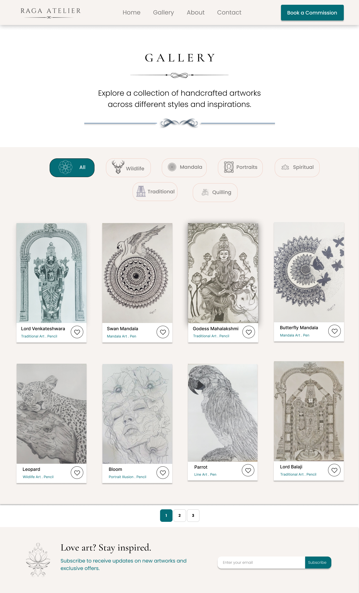

Case study
Raga Atelier Art Portfolio Website
A portfolio and commission website designed to help artists showcase their work, build a strong personal brand, and provide a seamless commission experience through an elegant and visually engaging interface.
Problem
Traditional artists often rely on social media platforms to showcase their work. While these platforms provide visibility, they rarely offer a structured way to present artwork, tell the artist’s story, and manage commission requests effectively.
This creates challenges in artwork discovery, personal branding, and communication with potential clients.
Design Goals
- Create an elegant and artistic digital experience.
- Showcase artworks through a structured gallery.
- Build trust through artist storytelling.
- Simplify the commission process.
- Reflect the handcrafted nature of the artwork through visual design.
User flow
The designed experience follows a natural visitor journey:
- Homepage → Explore Categories → Browse Artwork → Learn About Artist → Commission Inquiry
The flow was designed to guide visitors naturally from discovering artwork to taking action through a commission request.
Key UX decisions
Art-First Experience
- Large artwork previews to immediately capture attention.
- Minimal distractions to keep focus on the artwork.
Structured Gallery Navigation
- Artwork organized into meaningful categories.
- Improved discoverability and browsing experience.
Transparent Commission Process
- Clearly defined commission journey.
- Helps users understand what happens after inquiry.
Strong Personal Branding
- Dedicated artist section to establish trust.
- Consistent visual language inspired by traditional art.
Key screens


Feature overview
| Feature | Purpose |
|---|---|
| Artwork Categories | Helps users explore artworks easily. |
| Commission Process | Creates transparency and trust. |
| Artist Storytelling | Builds a personal connection with visitors. |
| Gallery Experience | Allows artworks to remain the primary focus. |
Impact & takeaways
This project allowed me to combine my passion for art and design while exploring how thoughtful user experiences can enhance personal branding and storytelling.
Through this project, I strengthened my Figma skills, improved my understanding of user-centered design, and learned how to create visually engaging interfaces without compromising usability.
One of the most rewarding aspects of this project was designing a platform that showcases my own artworks while solving a real-world challenge faced by many artists.